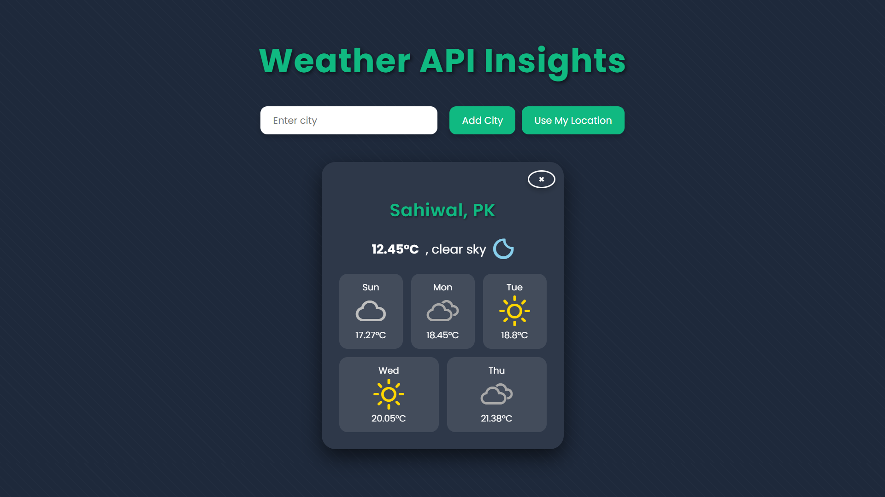

Weather Dashboard

Description
A Weather Dashboard web application that fetches and displays real-time weather data and a 5-day forecast for any city using a weather API. Users can search for cities or use geolocation to see current weather conditions in a clean, responsive interface.
🛠 Features
- City Search – Enter a city name to get real-time weather.
- Geolocation Support – Detect user location to display local weather.
- Current Weather Information – Shows temperature, humidity, wind speed, and weather description.
- 5-Day Forecast – Displays forecast for the upcoming five days.
- API Integration – Fetches live weather data using a weather API (OpenWeatherMap).
- Responsive UI – Works on desktop and mobile devices.
💻 Tech Stack
- HTML – Page structure and layout
- CSS – Styling and responsive design
- JavaScript – Fetching and processing API data
- Weather API – Real-time weather data source (OpenWeatherMap)